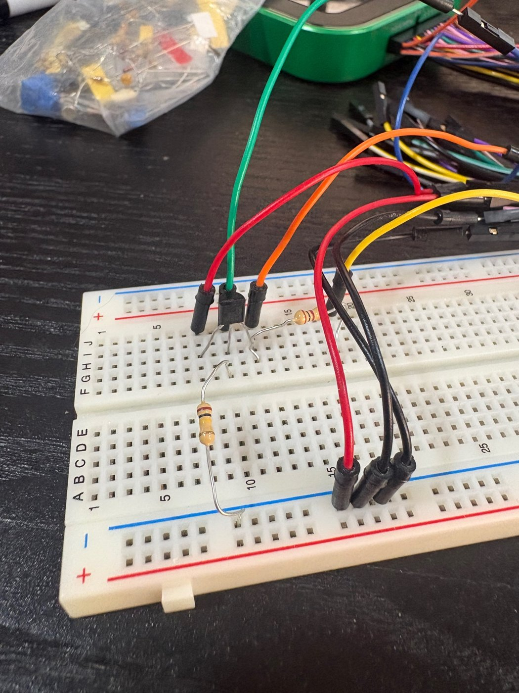
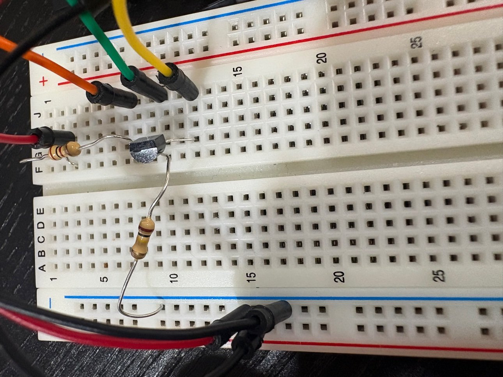

Project
BJT Characterization and Current Sink Design
Measured the DC behaviour of two discrete transistors, extracted the small-signal parameters that amplifier design actually uses, and finished by designing a current sink that holds 1 mA.
What I did
- Characterized a 2N3904 NPN in PSpice and on the bench at a collector current near 1 mA. Measured current gain came out at 106 against 117 in simulation, with transconductance of 34.8 mS, output resistance of 103.6 kΩ, and an Early voltage near 90 V, much lower than the model suggested.
- Repeated the characterization for a 2N3906 PNP, which measured a current gain of 292 and transconductance of 97.7 mS at 2.44 mA.
- Designed a current sink for an output current of 1.0 mA and a minimum output voltage of -2 V from a -5 V supply, choosing a 100 kΩ base resistor and solving for the remaining values.
- Showed with the small-signal model why the emitter resistor raises the sink's output resistance and stabilizes the bias point against supply changes, then verified the design in simulation.
Result
The simulated sink holds its 1 mA output current with the transistor in the active region down to a collector-emitter voltage of 0.3 V. The bench measurements tracked the simulation closely on current gain and transconductance, and showed the Early effect is far stronger in the real device than in the model.

